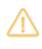
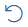
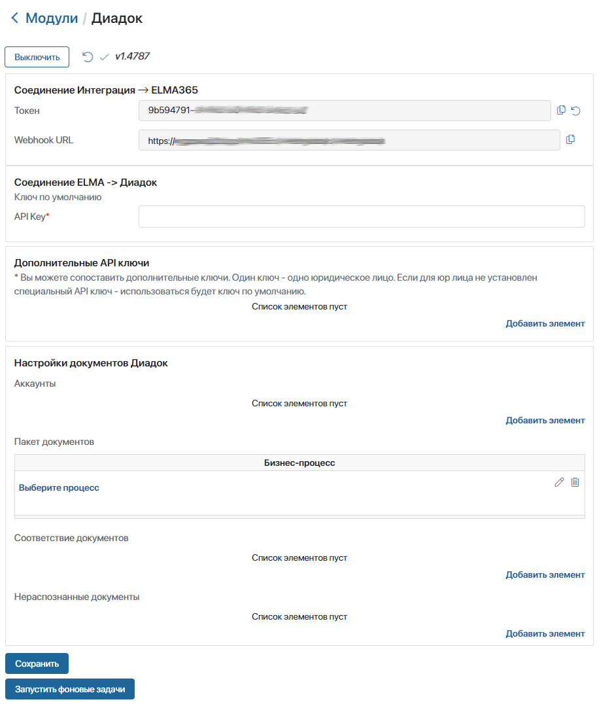
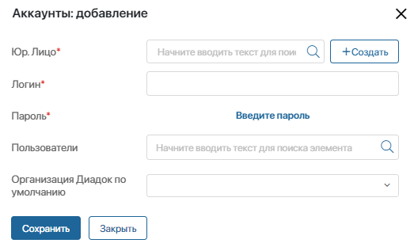
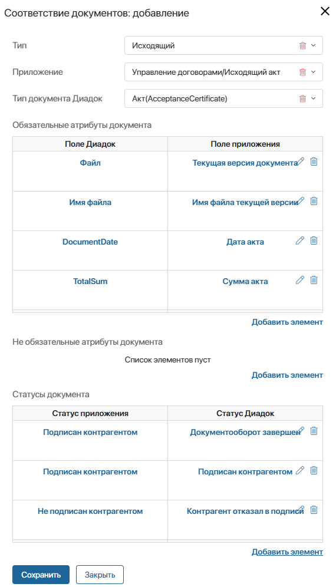
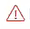
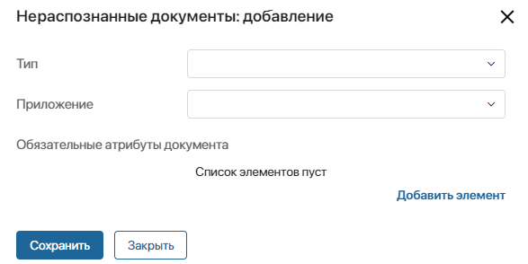
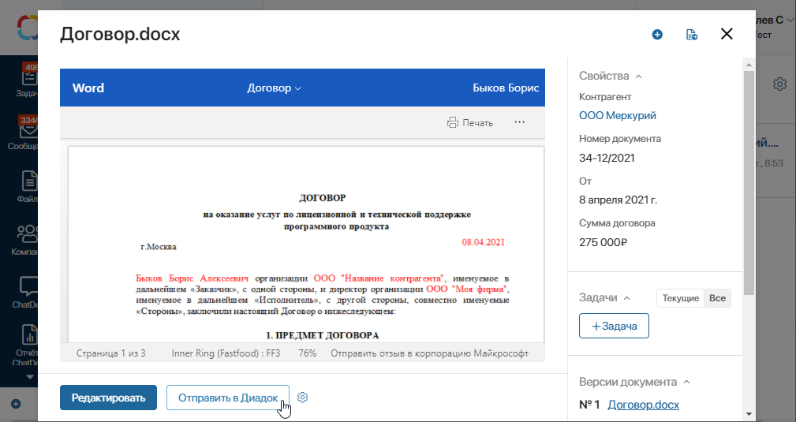

Вы можете обмениваться юридически значимыми документами с контрагентами в интерфейсе ELMA365. Для этого в системе предусмотрен модуль Диадок. Настроив его, вы сможете:
- отправлять и получать оригиналы документов, а также безопасно их хранить;
- проверять статусы документов в режиме реального времени;
- обеспечить юридическую значимость документов;
- быстро обрабатывать документы в соответствии с регламентами;
- исключить риски задержки и потери документов.
Все документы, участвующие в обмене, подписываются электронной подписью. Например, в ходе бизнес-процесса согласуется договор, который затем должен быть подписан контрагентом. В обычном случае его пришлось бы распечатать и отправлять с курьером, чтобы клиент поставил подпись. Интеграция с Диадоком поможет избежать потери времени — договор будет подписан удалённо с помощью электронной подписи.
начало примечание
Примечание
Вы также можете использовать бизнес-решение Диадок версии 2.0, установив из каталога ELMA365 Store. Оно содержит более гибкие настройки интеграции с Диадок.
Обратите внимание, для корректной работы Диадок версии 2.0 отключите модуль Диадок предыдущей версии, который размещён в разделе Администрирование > Модули > Электронный документооборот.
конец примечание
Настроить модуль «Диадок»
начало внимание
Настраивать модуль могут только пользователи, входящие в группу Администраторы.
конец внимание
Чтобы настроить модуль, перейдите в раздел Администрирование > Модули > Электронный документооборот > Диадок и нажмите Включить.
Если на открывшейся странице настроек вы увидите значок , обновите модуль. Для этого нажмите значок  рядом с кнопкой Выключить.
Перейдите к настройкам. Они выполняются в следующих блоках:

Чтобы добавить запись в любую таблицу настроек, нажмите Добавить элемент. Затем в открывшемся окне заполните поля и сохраните данные.
Вы можете изменить или удалить элемент таблицы.
Соединение Интеграция -> ELMA365
Этот блок отображается только если вы впервые открыли страницу настроек. Поля Токен и Webhook URL заполнены автоматически.
Соединение Elma -> Диадок
В поле API Key введите API ключ Диадока. Этот ключ используется по умолчанию для работы модуля. Обратите внимание, API ключ Диадока не предоставляется с пакетами обслуживания Диадок, приобретите его отдельно. Для этого обратитесь с заявкой о настройке интеграции на сайт Диадок.
Дополнительные API ключи
Этот блок настроек заполняется, если для юридических лиц есть дополнительные ключи Диадока. Каждой организации можно сопоставить один ключ.
Добавляя элемент, выберите организацию из системного справочника Мои юридические лица и укажите установленный для неё API ключ Диадока. Если для юридического лица не установлен специальный API ключ, то для него используется ключ по умолчанию.
Настройки документов Диадок
Задайте настройки для обмена документами в следующих таблицах: Аккаунты, Пакет документов, Соответствие документов и Нераспознанные документы.
Аккаунты
В этой таблице сопоставьте учётные записи сотрудников в ELMA365, которые будут отправлять документы в Диадок, с их аккаунтами в Диадоке.

- Юр. Лицо* — выберите компанию из системного справочника Мои юридические лица, от имени которой будут выполняться действия в Диадок.
- Логин* — введите логин учётной записи в Диадок.
- Пароль* — нажмите Введите пароль и затем укажите пароль учётной записи в Диадок. При вводе пароля символы скрываются.
- Пользователи — выберите пользователя, которому назначаете доступ.
- Организация Диадок по умолчанию — выберите организацию, которая будет использоваться при отправке документов. Если это поле не заполнено, и в учётной записи пользователя в Диадоке указано несколько организаций, при отправке документов автоматически учитывается первая организация в списке. Обратите внимание, это может привести к ошибкам подписания и отправки файлов.
Пакет документов
Укажите процесс, в котором будет обрабатываться пакет документов, отправленный из Диадок. В таком процессе вы можете настроить согласование и подписание пакета документов, а также ознакомление сотрудников с ним.
В настройке Связать с полем укажите переменную процесса типа Произвольное приложение, в которую сохранятся документы, отправленные пакетом.
В этой таблице можно указать только один процесс.
Соответствие документов
В этой таблице установите соответствие между типами документов в ELMA365 и в Диадок, а также сопоставьте атрибуты документов. Например, дату документа в Диадок сопоставьте с датой договора в ELMA365.

- Тип — выберите, с каким документопотоком из ELMA365 работать:
- Входящий — полученные документы из Диадок в ELMA365;
- Исходящий — загружаемые документы из ELMA365 в Диадок;
- Приложение — выберите приложение типа Документ, элементы которого будут участвовать в электронном обмене с Диадоком. Если выбран тип Входящие, после привязки приложения ниже появится поле Бизнес-процесс;
- Бизнес-процесс — нажмите Выберите процесс и укажите процесс, который автоматически запустится для сопоставления документов, например, процесс согласования входящего договора;
- Тип документа Диадок — выберите тип документа, который соответствует приложению в ELMA365. Обратите внимание, в Диадоке есть собственные виды документов, их список вы можете посмотреть на сайте Диадок;
- Обязательные атрибуты документа — сопоставьте обязательные для заполнения атрибуты Диадока и приложения ELMA365. Атрибуты Файл и Имя файла вносятся в список автоматически.
Если в Диадоке вы выберете формализованный тип документа, в таблице Обязательные атрибуты документа добавится дополнительный атрибут Имя файла титула получателя. Этот атрибут нужно связать с полем типа Файл приложения ELMA365. В нём будет храниться файл формата .xml с информацией о титуле продавца или покупателя, в зависимости от типа документа.
Важно: поле для хранения титула продавца или покупателя нужно добавить на шаблон формы приложения, который вы создаёте для отправки или получения документов в системе Диадок. Подробнее о формализованных документах читайте на сайте Диадок.
Начало внимание
Сопоставлять можно только атрибуты с одинаковым типом данных. Например, если регистрационный номер хранится в ELMA365 как строка, его нельзя сопоставить с числовым полем Диадок. Если все обязательные для заполнения поля Диадок не связаны с полями приложения, работа с документами невозможна, а документ отмечается в таблице значком .
Конец внимание
- Необязательные атрибуты документа — это поле настраивается так же, как предыдущее, оно не обязательно для заполнения. Например, здесь можно сопоставить ИНН, КПП и наименование контрагента и поставщика.
- Статусы документа — сопоставьте статусы элемента приложения со статусами Диадок, выбрав соответствующие варианты в выпадающих списках.
Нераспознанные документы
Эта таблица не обязательна для заполнения. В ней можно настроить создание документов, типы которых не сопоставлены в таблице Соответствие документов.
Привяжите два приложения для исходящих и входящих документов и сопоставьте их атрибуты. Нераспознанный документ будет создан в указанном приложении, его атрибуты сохранятся в виде файла.
Например, для документов сопоставлены такие типы Диадока, как Акт, Договор и Счет. При этом для входящих и исходящих нераспознанных документов вы привязали два приложения. Тогда для входящего или исходящего документа типа Исправленный счет будет создан элемент в соответствующем приложении.
Поля Тип, Приложение и Обязательные атрибуты документа заполняются так же, как поля в таблице Соответствие документов. Отличие заключается в том, что для входящих нераспознанных документов не предусмотрена настройка запуска бизнес-процесса.

После того как все настройки заданы, внизу страницы нажмите Сохранить.
начало примечание
Примечание
Для работы с Диадоком в закрытом контуре настройте доступ до ресурсов сервиса Контур, а именно до адреса https://diadoc-api.kontur.ru. Также со стороны сервиса Контур могут потребоваться дополнительные настройки доступа к его ресурсам.
конец примечание
Теперь взаимодействие с Диадоком успешно настроено. На карточке элемента сопоставленного приложения появится кнопка для отправки документов.

Также вы можете работать с модулем в бизнес-процессах. Для этого используйте графические элементы процесса Загрузка печатной формы, Отказать в подписи, Отправить документ, Подписать.
Запуск фоновых задач
Фоновые задачи — это запросы в Диадок для обновления статусов и получения новых входящих документов. Эти задачи выполняются каждые пять минут.
Вы можете вручную обновить данные. Для этого на странице настроек Диадока нажмите кнопку Запустить фоновые задачи. Например, вы создали бизнес-процесс для обмена документами с Диадоком и проверяете его работу. Отправьте документ в Диадок и затем запустите фоновые задачи, чтобы убедиться в смене статуса документа, не дожидаясь автоматического запроса.